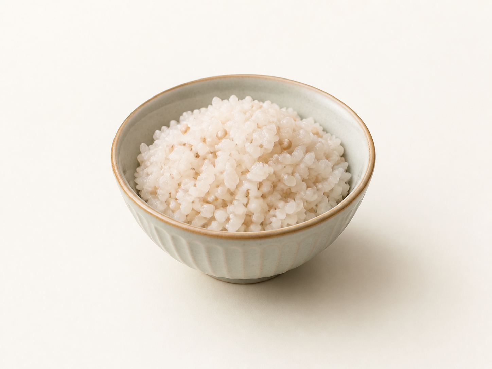
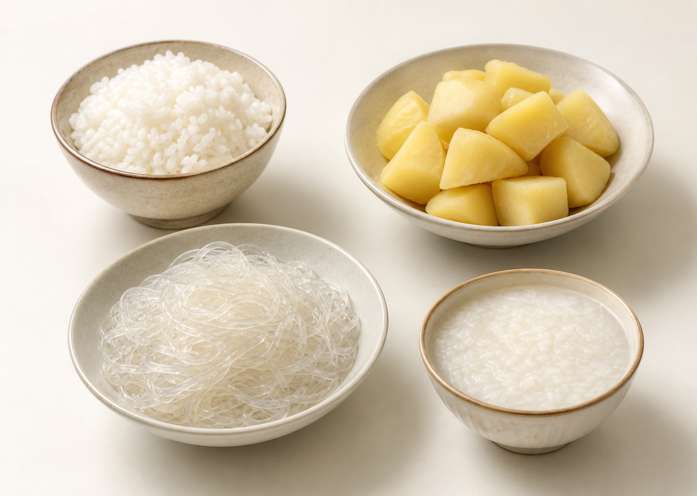
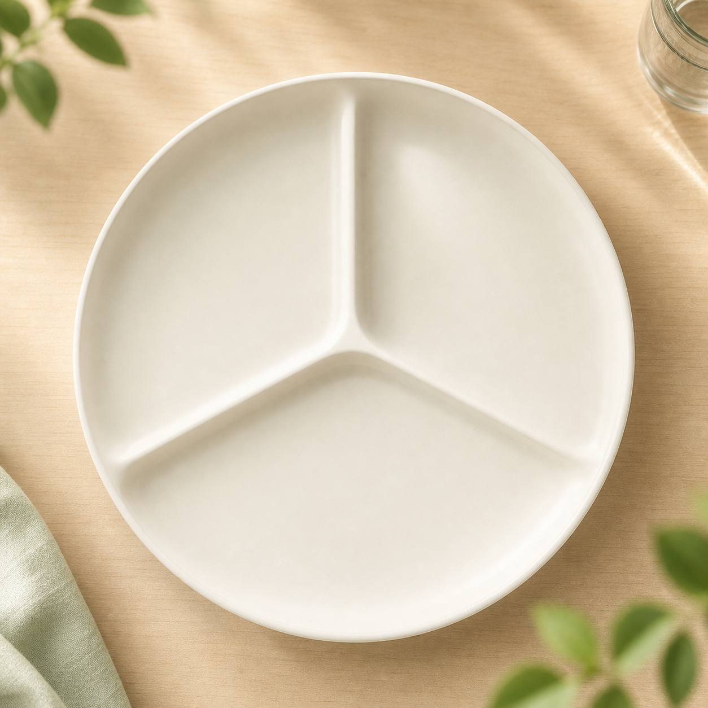
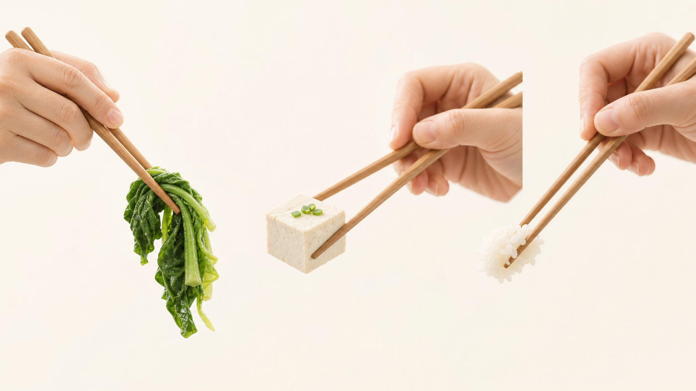

血糖高的一周餐盘改造 · 周二
午餐米饭
能吃吗？
不是戒米饭，是会搭配

血糖高，不是米饭完全不能吃，关键看量、搭配和顺序。
白粥煮得软烂、吃得快，单独喝时，餐后血糖可能更容易上来。

米饭 + 土豆 + 粉条
看着菜多，其实主食可能叠加了；不是只看甜不甜，也要看总量。

半盘菜
蛋白
小半碗饭
半盘青菜，四分之一鱼、蛋或豆腐，四分之一米饭；饭量先从小半碗观察。

先吃几口菜，再吃蛋白，最后吃米饭；别空口扒饭。
小半碗饭
鱼或豆腐
绿叶菜
小半碗米饭，清蒸鱼或豆腐，一大盘绿叶菜，再配一碗无糖紫菜汤。
午餐观察记录
主食多少写下来
餐后2小时测一次
连续几天看趋势
不知道自己适合多少饭，就连续记录几天，再和医生或营养师一起调整。